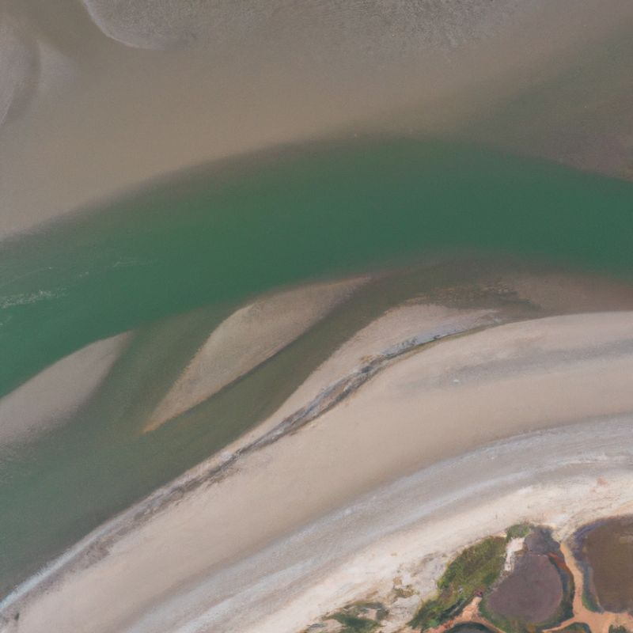

Membership
Joining the Coalition is how you make your commitment to advancing responsible sand and silicates visible, and how you take a hand in defining what responsible practice means for these materials.

Member or Supporter
Your organisation can join as a Voting Member or as a Supporter member. Voting Members hold a formal role in governance, including the right to vote at the Annual General Meeting. Supporter members take part fully in the Coalition's activities and benefits, without the formal governance role.
What membership opens
- A credible commitment signal. The only credible commitment signal that exists for these materials, visible to clients, suppliers and regulators, with the right to use the Coalition logo.
- The materials protocols. The operational detail that turns the framework into practice in your own supply chain. The framework will be published open access. The protocols are for Members.
- A seat at the table. A hand in shaping what good looks like across all five materials groupings.
- One knowledge hub. Research, knowledge and practice drawn together from across our network of Founders, Members and partners.
- Projects that close real gaps. From construction sand and aggregates to industrial sands, clays for ceramics and a labelling scheme.
- One platform, one voice. A collective voice that raises awareness of these materials and replaces invisibility with regard.
What membership asks, and what it allows
A Member is publicly committed to advancing the responsible sourcing, use and production of sand and silicates, and to helping build what that takes. Membership is a commitment, not a certification.
Members and Supporters may
- State publicly that they are Members of the Coalition for Responsible Sand and Silicates.
- Report publicly on activities relating to their membership.
- Use the Coalition name and logo in external communications, subject to the Coalition brand guidelines.
Fee structure
The Coalition is multistakeholder by design. Civil society, research and industry sit together and the seats carry equal weight. The annual fee is tiered to reflect the size and type of organisation, and public-good actors may be fee-free.
The full fee schedule is set out in the Member prospectus. The annual fee is set by the Board of Directors with advice from the Advisory Council. Flexible payments are possible by instalments, half-yearly or quarterly.
Join in 2026
Become a Founder
Organisations that join during 2026 are registered as Founders. A Founder holds a permanent seat at the Advisory Council and a direct hand in the Coalition's priorities. The Founder year closes at the end of 2026.
Founders take first choice of the early demonstration projects and a say in scoping them. Recognition as a Founder carries a credible claim to early action on responsible sand and silicates.
How to join
The steps take you from first contact to an active part in the work.
- First contact and pack shared. You contact us, or we approach you, and we send the membership information pack.
- The filter. Our touchstone position paper in the information pack sets out directional commitments. A first call with the Secretariat gives both sides a sense of fit.
- Application. Share your preferred status, organisation type and fee tier.
- Onboarding conversation. A short call, including at least one Founder, confirms alignment and maps your engagement plan.
- Decisions and agreements. Once alignment is clear, membership is approved and we complete a membership agreement and raise the annual invoice.
- Welcome and integration. We welcome you into the community and introduce the Member offering. We connect you to the projects you chose, with an early check-in to confirm you are contributing.
Read and apply
The prospectus sets out the full detail. To apply, download the application form, complete it and send it to membership@responsiblesand.org.
Where to start
If you would like to join, or you would like to talk it through first, get in touch.